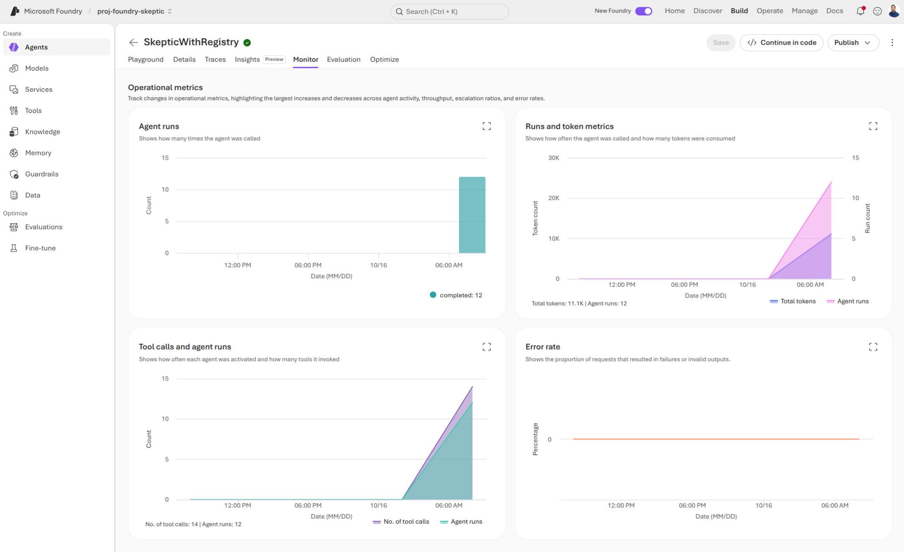
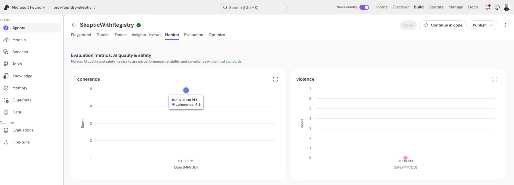

Most AI platform talks are demos disguised as sales pitches. This one is not.
Microsoft Foundry has been renamed twice, split into two portals, replaced its agent API, and retired its flagship orchestration tool over the course of two years.
If that has made you skeptical, you are reading the evidence correctly. The question is whether there is a product worth adopting underneath all that motion.
Before We Start
Everything here is accurate as of 2026-10-16. This platform changes faster than almost anything else in Azure.
Several features I will show are in preview. I will say so each time.
This talk assumes you can read Python, and that you know what an LLM API call does. It does not assume you have used Foundry, Azure ML, or an agent framework before.
Agenda
Microsoft Foundry (Today)
The Model Catalog: Read the Fine Print
Agents: The Actual Product
Observability: Where Foundry Earns Its Keep
The Honest Assessment
The Current Resource Model
One Foundry resource in Azure that contains one or more projects.
The resource owns identity, networking, and policy
A project owns the work: models, agents, tools, data
Each project has one endpoint, and that is the only URL your code needs
This setup replaces the old hub + Azure OpenAI + Azure AI Services sprawl.
Two Microsoft Foundry Portals
Microsoft Foundry has two completely different portals that handle two different resource models.
Foundry: resource plus projects. This is where the new investment goes.
Foundry (classic): hub-based projects. Some real work still lives here.
The documentation is now up to date on the "new" portal but many online examples will still reference the classic portal or its prior iteration.
The SDK Consolidation
The SDK includes one package and one endpoint to one OpenAI-compatible client.
Replaces azure-ai-inference, azure-ai-generative, and azure-ai-ml across 5+ endpoints.
This follows Microsoft's Secure Future Initiative (SFI), so it biases heavily toward using Microsoft Entra instead of API keys for authentication and access control.
This is impressive, but it is a marketing number. It tells you nothing you can act on.
Who Sells It? Who Stands Behind It?
The catalog splits in two and this split decides whose product you are actually buying.
gpt-6-sol sold by Azure
Claude Opus 5.5 partners and community
Seller
Microsoft
Anthropic
SLA
Microsoft
Anthropic
Terms for your data
Microsoft Product Terms
Anthropic's terms
Billing
Azure meters
Azure Marketplace, Claude Consumption Units
Content filtering
Foundry defaults
None built in; you add it
Support
Microsoft Support
Microsoft Support
One support number. Two contracts.
Nine Ways to Deploy One Model
First, two hosting models:
Managed compute: open-weight models on dedicated GPUs, billed per accelerator-hour
Serverless: Microsoft hosts it, billed by the token
Then serverless alone has nine deployment types:
Global Standard, Global Provisioned, Global Batch, Data Zone Standard, Data Zone Provisioned, Data Zone Batch, Standard, Regional Provisioned, Developer.
Two axes, not nine choices: pay-per-token or reserved, and global, data zone, or regional.
Instant Access
Name a supported model and call it. This means no deployment, no deployment-type dropdown, and nothing to clean up.
This is a very promising development--or, at least it will be once it's GA.
Currently (Preview), and your project has to be in West US 3.
The Seam Moved
Managed compute now runs in the new portal, on the same endpoint and SDK as everything else. (Preview)
What still falls through to classic: gated Hugging Face models, CPU deployments, and Speech or Vision custom training.
The new path has fine print of its own: no built-in content filtering, Global deployment only, and OpenAI fine-tuning only in the resource's default project.
Demo Time
Agenda
Microsoft Foundry (Today)
The Model Catalog: Read the Fine Print
Agents: The Actual Product
Observability: Where Foundry Earns Its Keep
The Honest Assessment
Foundry Is an Agent Platform Now
The catalog, the SDK, the toolbox, and the tracing all exist to get an agent into production.
Which also means: if you only need to call a model, you do not need Foundry.
A Spectrum, Not a Product
One decision, not three: how much of the runtime do you want to own?
Prompt agent: instructions, a model, tools. Nothing to manage.
Hosted agent: your code, your framework. Foundry runs the container.
Responses API: your process, your code. No agent resource at all.
Least to manage, down to most control. You can start at the top and move down later.
Same Model, Same Instructions, Different Answers
“Should I build my RAG pipeline on Prompt Flow?”
Without tools: answers from training data. Sounds reasonable either way.
With the registry:“Retired. Full retirement 2027-04-20.”
Toolbox
One agent with one tool is easy. Ten agents sharing six tools is a governance problem.
Curate once, serve behind a single managed MCP endpoint, version the set.
Consumer endpoint: always the default version. Promote without redeploying agents.
Developer endpoint: pinned, for validating before you promote.
Read the Fine Print on Your Guardrail
Toolbox tools carry require_approval. Set it to always and you would expect the platform to stop the call.
It does not. The toolbox MCP endpoint does not blocktools/call. Your runtime has to enforce it.
And a system prompt instruction is not enforcement.
Bring Your Own Framework
Microsoft Foundry supports Agent Framework, LangGraph, OpenAI Agents SDK, Anthropic Agent SDK, and the GitHub Copilot SDK.
For each of these, you zip the source. Then, Foundry builds it remotely and runs it with a managed endpoint, autoscale, and the agent's own Entra identity.
Two lines connect our agent to the toolbox, and we do so by name, not by URL. Promote a toolbox version and it picks it up with no redeploy.
Demo Time
Agenda
Microsoft Foundry (Today)
The Model Catalog: Read the Fine Print
Agents: The Actual Product
Observability: Where Foundry Earns Its Keep
The Honest Assessment
The Strongest Argument for the Platform
Everything up to now you could have assembled yourself.
This is the part you would otherwise have to build, and the part that keeps working when you switch companies.
This is the part of the product most worth paying for.
Tracing Is OpenTelemetry
Tracing captures every step of the agent's execution using OpenTelemetry spans rather than a proprietary format. The same spans can be exported to multiple observability backends, like Datadog, Grafana Tempo, Jaeger, or Honeycomb.
This ensures that every action taken by the agent is recorded and can be analyzed later, providing full visibility into the agent's behavior.
It also covers agents you did not build in Foundry.
A Demo Is an Anecdote
In section 4 I showed you one question and one answer. That is a story, not evidence. Let's fix that here.
We'll send a set of twelve questions to both agents and collect their responses. Now it is a number you can put in a pull request.
One Evaluation, Two Runs
The rubric is generated from the agent's own instructions and tools, so the judge scores what the agent was actually built to do.
One evaluation is a container: every run under it shares a schema and produces the same metrics. That is what makes two runs comparable.
Continuous Evaluation
Everything so far ran against a test set, before release. This runs against production.
It scores sampled live traffic and writes the results into Application Insights, next to the traces.
Evaluate and trace become two views of one event. (Preview)
Twelve Requests: Operations

Twelve Requests: Quality and Safety

Demo Time
Agenda
Microsoft Foundry (Today)
The Model Catalog: Read the Fine Print
Agents: The Actual Product
Observability: Where Foundry Earns Its Keep
The Honest Assessment
What Works
Four things, and you watched all four:
Agent hosting. Zip a directory, get a managed endpoint, autoscale, and an Entra identity. No cluster, no ingress, no certificate.
Framework portability. That was an Agent Framework agent. Foundry never asked it to be anything else.
Observability. OpenTelemetry in, Application Insights out. It even works on agents that were never built here.
One resource, one endpoint, one SDK. Genuinely better than the five endpoints it replaced.
What Frustrates
The seam. As Microsoft changes things around in Foundry, there are still rough spots and seams that catch you off guard. Things that used to work fine are now "classic" features and their replacements either don't exist or aren't GA.
Preview holds up load-bearing walls. Instant access. Continuous evaluation. Client-side tracing. Memory. The features that make Foundry interesting are the ones with no SLA.
The cadence outruns everyone. Including the docs, including the portal, including this talk.
One fair distinction: the documentation is honest. The marketing is not. Every criticism in this talk came from Microsoft Learn.
Lock-In, Precisely
Ask it per layer, not once.
Framework layer: low. OpenTelemetry, MCP, A2A, an OpenAI-compatible API. Exit cost: swap the chat client and redeploy. Your agent code, prompts, and tool definitions all come with you.
Control plane: high. Identity, RBAC, networking, toolbox governance, observability. Exit cost: rebuild all of it, including the approval enforcement Foundry never did for you.
You are not locked into Foundry's code. You are locked into its operations.
What It Actually Costs
Example: a help desk agent supporting 2,000 employees who each generate 3 tickets per month. We want to triage issues, review a knowledge base over past tickets, perform web-based research assistance, and offer self-service chat.
Web grounding
$65
42%
Container compute — 0.5 vCPU, 1 GiB, 24/7
$49
31%
Model tokens (gpt-5-mini)
$31
20%
Embeddings, file search, tracing
<$1
<1%
Total
$154
$0.08/employee
The model is 20% of the bill. Web search costs twice what the model does.
Who Should Adopt This
Yes, if:
You are already on Azure, with Entra and networking sorted
You are building agents, not just calling a model
You want the tracing and evaluation story
You are a team, and governance is somebody's job
No, if:
You are not on Azure. The control plane is the value, and it does not travel.
You only need inference. Call an API.
Open weights are the core of your product. That path is preview, and gated models still need classic.
Preview in production is not something you can sign off on
Wrapping Up
There is a real product here, but not the one the keynote sold you.
Key takeaways:
Start with the Responses API: lowest commitment, easiest exit
Keep agent logic in your repo; use Foundry for hosting, identity, and observability
Ignore the catalog count and focus on the commercial tier
Lock-in is low at the framework layer and high at the control plane